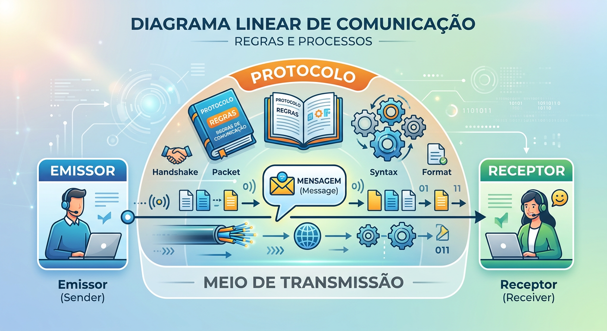
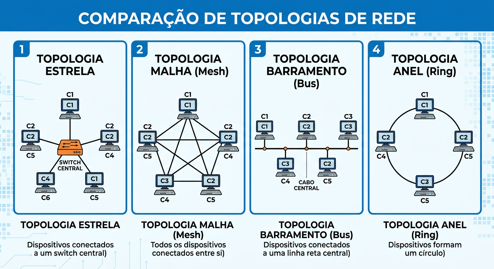
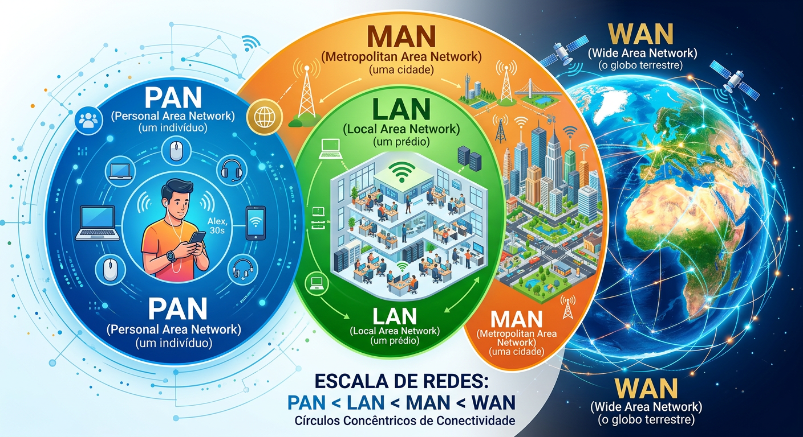
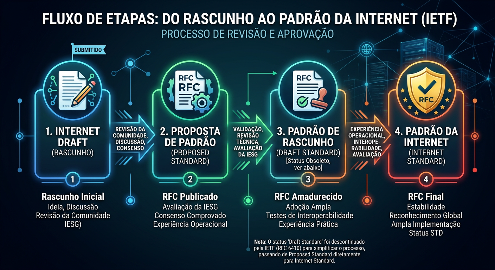

A espinha dorsal da sociedade moderna
É a troca de informações entre dois dispositivos por meio de um meio de transmissão físico ou sem fio. Depende da combinação harmoniosa de hardware (equipamento) e software (programas).

Convertidos em bits (ASCII, Unicode) ou binários matemáticos.
Divididas em pixels, com valores numéricos para cor e intensidade.
Som convertido em sinal digital através de amostragem.
Imagens em movimento e sons exigindo grande largura de banda.
Comunicação unidirecional. Apenas um transmite, o outro recebe (Ex: teclado).
Ambos transmitem e recebem, mas não ao mesmo tempo (Ex: walkie-talkie).
Ambos transmitem e recebem simultaneamente (Ex: telefonia móvel).
Uma rede é um conjunto de dispositivos (nós) conectados. As redes modernas usam o processamento distribuído, onde tarefas são divididas entre vários computadores para aumentar a eficiência e evitar falhas no sistema como um todo.
Tempo de trânsito e vazão de dados adequados ao número de usuários.
Frequência de falhas baixa e rápida recuperação de links.
Proteção de dados contra acessos não autorizados e danos.

Servidores poderosos fornecem recursos e serviços centrais, enquanto os clientes os solicitam e utilizam.
Todos os computadores atuam como clientes e servidores, compartilhando recursos diretamente entre si.
Pessoa / Curta distância
Prédio / Campus
Cidade
País / Mundo (Ex: Internet)

Provedores de redes globais que formam o esqueleto (backbone) da Internet mundial.
Pagam aos provedores de nível 1 por conectividade e atendem a grandes regiões ou países inteiros.
Na base da pirâmide, fornecem o acesso direto à internet para as casas e empresas dos usuários finais.
O desenvolvimento da Internet ocorre de forma aberta. O principal mecanismo é o RFC (Request for Comments). Um documento começa como rascunho e, após testes e revisões, pode se tornar um padrão oficial supervisionado pela IETF.

Qual topologia física é conhecida por ser extremamente robusta devido a possuir um link dedicado ponto a ponto entre todos os dispositivos, embora seja cara?